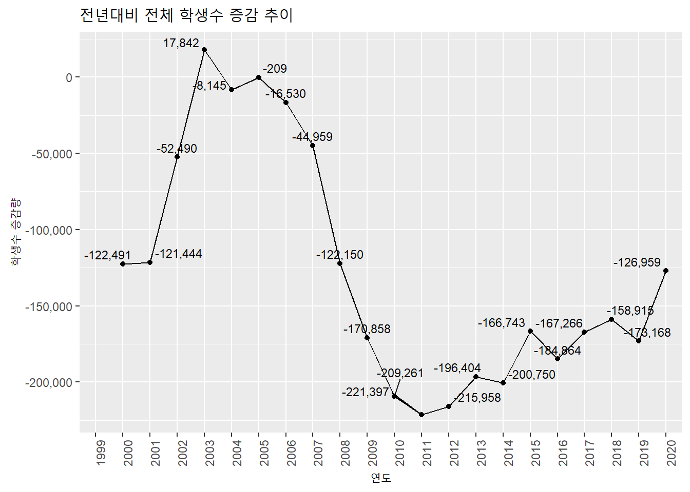

4.8 월별, 분기별, 연별 증감량
월별, 분기별, 연별 증감량을 산출하기 위해서는 바로 직전 데이터와의 차감 데이터를 계산해야 한다. 시계열 분석에서는 바로 이전 데이터와의 차감데이터가 매우 중요하게 활용된다. 차감데이터가 증감량이며 이 차감 데이터를 원본데이터로 나누면 증감률이 된다.

- 데이터프레임 : lag() 함수
시계열 데이터가 저장된 데이터프레임의 데이터 열에 lag()를 적용하면 데이터를 하나씩 Shift 시킨 벡터를 반환해준다. 이 벡터를 데이터프레임에 추가해주고 mutate()를 사용해 원본데이터에서 lag된 데이터를 빼주면 증감량을 얻을 수 있고 증감량을 원본 데이터로 나눠주면 증감률을 구할 수 있다.
students_lag <- cbind(연도 = students$연도,
학생수계 = students$학생수계,
전년 = students %>%
lag(1)%>%
select(학생수계) %>%
rename(전년 = 학생수계)
) %>%
mutate(증감 = 학생수계 - 전년, 증감율 = round((학생수계/전년)-1, 3) * 100)
### 2. lag(1) 함수를 사용하여 시차1 데이터 생성(하나씩 아래로 shift) 하고 컬럼명을 lag로 변경
### 3. 시차1 데이터와 원 데이터의 차이를 증감 컬럼으로, 원데이터를 시차1 데이터로 나눈 수치를 1에서 빼준 결과(비중을 증감으로 변환)에 100을 곱한다(백분률로 변환)
students_lag %>% head() ## 연도 학생수계 전년 증감 증감율
## 1 1999-01-01 8658358 NA NA NA
## 2 2000-01-01 8535867 8658358 -122491 -1.4
## 3 2001-01-01 8414423 8535867 -121444 -1.4
## 4 2002-01-01 8361933 8414423 -52490 -0.6
## 5 2003-01-01 8379775 8361933 17842 0.2
## 6 2004-01-01 8371630 8379775 -8145 -0.1students_lag %>%
ggplot(aes(as.factor(year(연도)), 증감)) +
geom_line(aes(group = 1)) +
geom_point() +
ggrepel::geom_text_repel(aes(label = scales::comma(증감)), vjust = 1, size = 3) + ### ggrepel::geom_text_repel() 함수로 숫자들이 겹치지 않게 plotting
labs(title = '전년대비 전체 학생수 증감 추이', x = '연도', y = '학생수 증감량') +
scale_y_continuous(labels = scales::number_format(big.mark = ',')) +
theme(axis.text.x=element_text(angle=90,hjust=1))
tsibble:diffrence()
앞선 데이터 프레임에서는 lag() 함수를 사용하여 원 데이터의 time shift를 한 데이터 컬럼을 생성하고 두 컬럼의 차이를 구하였다. tsibble 객체는 이 과정을 바로 지원하는 difference() 함수를 제공한다. 따라서 데이터프레임보다는 몇단계 과정을 줄일 수 있다.
students.tsibble%>% select(1, 2) %>%
mutate(증감 = difference(.$학생수계, lag = 1)) %>%
mutate(증감율 = round((증감/학생수계), 3) * 100) %>% head(10)## # A tsibble: 10 x 4 [1D]
## 연도 학생수계 증감 증감율
## <date> <dbl> <dbl> <dbl>
## 1 1999-01-01 8658358 NA NA
## 2 2000-01-01 8535867 -122491 -1.4
## 3 2001-01-01 8414423 -121444 -1.4
## 4 2002-01-01 8361933 -52490 -0.6
## 5 2003-01-01 8379775 17842 0.2
## 6 2004-01-01 8371630 -8145 -0.1
## 7 2005-01-01 8371421 -209 0
## 8 2006-01-01 8354891 -16530 -0.2
## 9 2007-01-01 8309932 -44959 -0.5
## 10 2008-01-01 8187782 -122150 -1.5employees%>%
mutate(증감 = difference(employees.tsibble$total, lag = 1)) %>%
mutate(증감율 = round((증감/total), 3) * 100) %>% select(1, 2, 4, 5) %>% head(10)## time total 증감 증감율
## 1 2013-01-01 24287 NA NA
## 2 2013-02-01 24215 -72 -0.3
## 3 2013-03-01 24736 521 2.1
## 4 2013-04-01 25322 586 2.3
## 5 2013-05-01 25610 288 1.1
## 6 2013-06-01 25686 76 0.3
## 7 2013-07-01 25681 -5 0.0
## 8 2013-08-01 25513 -168 -0.7
## 9 2013-09-01 25701 188 0.7
## 10 2013-10-01 25798 97 0.4xts:diff()
xts 객체도 tsibble 객체와 같이 차분 함수인 diff() 함수를 제공한다. 이후 과정은 tsibble과 동일한 과정을 거친다.
students.xts$증감 <- diff(students.xts[,2])
students.xts$증감율 <- round((students.xts$증감/students.xts$학생수계), 3) * 100
students.xts[, c('학생수계', '증감', '증감율')] %>% head(10)## 학생수계 증감 증감율
## 1999-01-01 8658358 NA NA
## 2000-01-01 8535867 11097 0.1
## 2001-01-01 8414423 -121 0.0
## 2002-01-01 8361933 5114 0.1
## 2003-01-01 8379775 -3725 0.0
## 2004-01-01 8371630 -4818 -0.1
## 2005-01-01 8371421 -110 0.0
## 2006-01-01 8354891 4209 0.1
## 2007-01-01 8309932 -4262 -0.1
## 2008-01-01 8187782 -3728 0.0plot.xts(students.xts[, '증감율'], main = '전년대비 학생수 증감률')
employees.xts$증감 <- diff(employees.xts$total)
employees.xts$증감율 <- round((employees.xts$증감/employees.xts$total), 3) * 100
employees.xts[, c('total', '증감', '증감율')] %>% head(10)## total 증감 증감율
## 2013-01-01 24287 NA NA
## 2013-02-01 24215 -72 -0.3
## 2013-03-01 24736 521 2.1
## 2013-04-01 25322 586 2.3
## 2013-05-01 25610 288 1.1
## 2013-06-01 25686 76 0.3
## 2013-07-01 25681 -5 0.0
## 2013-08-01 25513 -168 -0.7
## 2013-09-01 25701 188 0.7
## 2013-10-01 25798 97 0.4plot.xts(employees.xts[, c('증감율')], main = '전월대비 전체 취업자 증감률')
코드 설명
cbind()로 student의 연도, 학생수계 열과lag()의 결과인 lag된 열을 묶어서 student_lag 데이터프레임을 생성이중 lag 열의 이름을 전년으로 바꿔줌
mutate()로 증감(학생수계 - 전년)과 증감률(round((학생수계/전년)-1, 3) * 100) 열을 생성